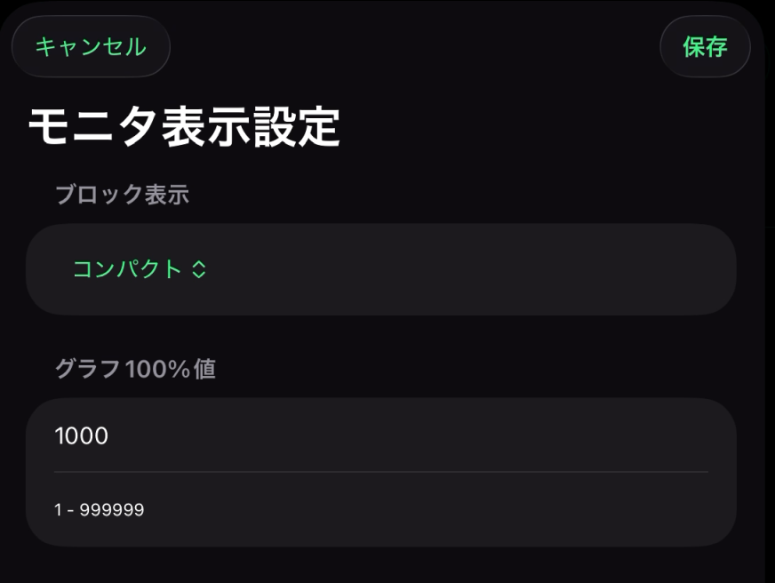

コンパクト
連続アドレスを小さなセルで多く表示します。広い範囲の ON/OFF や値変化をまとめて見るときに使います。
Monitor Display Settings
Block 監視の表示密度と、数値バーの基準になるグラフ100%値を設定します。現場で見たい点数と読みやすさのバランスを調整できます。

コンパクト と 詳細 を切り替えます。連続アドレスを小さなセルで多く表示します。広い範囲の ON/OFF や値変化をまとめて見るときに使います。
List と同じカード形式で表示します。アドレス、値、コメント、登録状態を読み取りながら確認したいときに使います。
点数を優先する場合はコンパクト、値やコメントの読みやすさを優先する場合は詳細を選びます。
WORD 系デバイスの値をバーで見るとき、どの値を 100% として扱うかを指定します。設備に合わせて基準値を設定すると、現在値の大小を視覚的に確認しやすくなります。
たとえば上限値や通常運転時の最大値を入れておくと、Block 監視で値の変化を比較しやすくなります。実際のスケールは設備やデータタイプに合わせて設定してください。